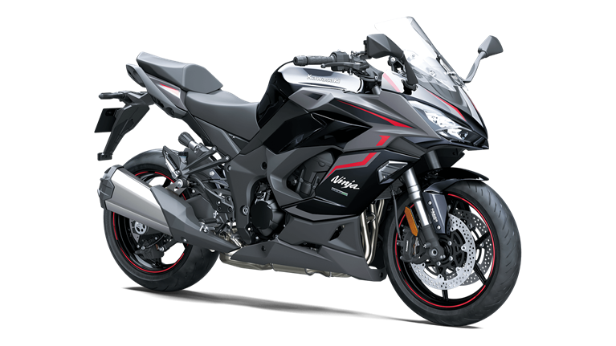

KAWASAKI - NINJA1000SX

SPECS:
- Kawasaki Quick Shifter (KQS)
- Kawasaki TRaction Control (KTRC)
- Kawasaki Cornering Management Function (KCMF)
- Kawasaki Intelligent anti-lock Brake System (KIBS)
- Electronic Throttle Valves
- Integrated Riding Modes
- Power Mode selection
- Assist & Slipper clutch
- Electronic Cruise Control
- ECU tuning
- All-digital TFT color instrumentation
- Smartphone connectivity via RIDEOLOGY THE APP
- Bridgestone Battlax Hypersport S22 Tires